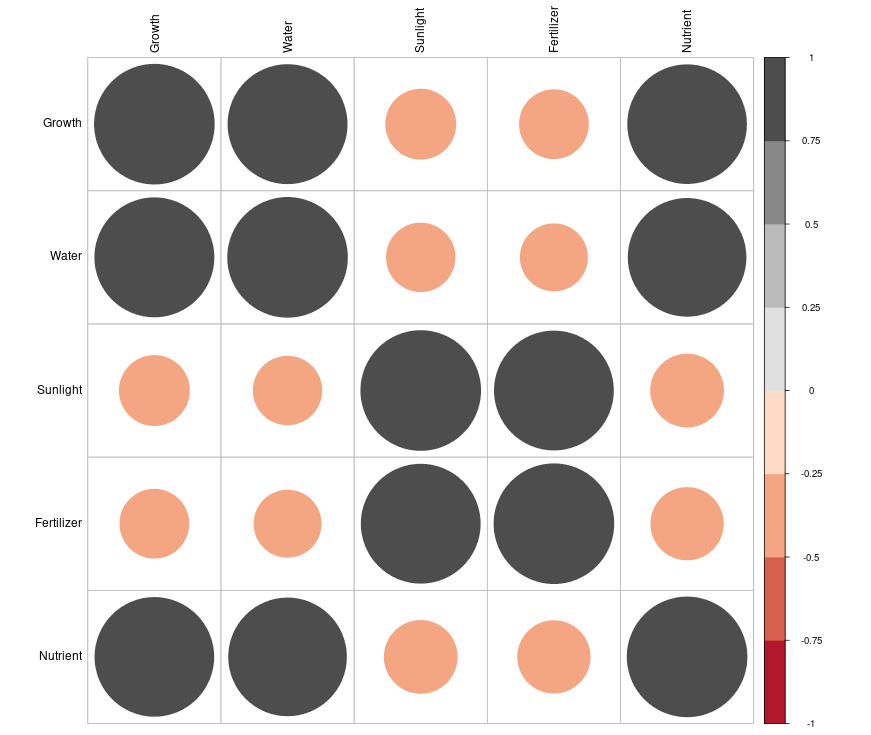

8 Measures of association
In the previous chapters, we examined measures of central tendency, which summarize the location of data, and measures of dispersion, which describe the spread around that location. Together, these tools provided us with a foundation for understanding and summarizing a single dataset. However, in many real-world scenarios, we are interested in understanding the relationships between variables rather than focusing on one variable in isolation.
Measures of association allow us to explore and quantify the connections between two or more variables. For example, does fertilizer use influence crop yield? Is there a relationship between farm size and agricultural income? Do education levels impact the adoption of new farming technologies? By studying association, we can answer such questions and uncover meaningful patterns in data.
In this chapter, we will introduce key measures of association, such as covariance, correlation coefficients, and other related metrics. We will discuss how these measures are calculated, interpreted, and applied to analyze relationships between variables. By the end of this chapter, you will be equipped to assess both the strength and direction of relationships, providing deeper insights into agricultural and social science research.
8.1 Linear and monotonic relationship
Linear relationship
A linear relationship (or linear association) is a statistical term used to describe a straight-line relationship between variables. Linear relationships can be expressed either in a graphical format where the variable plotted on X-Y plane gives a straight line or relation between two variables (consider x and y) can be expressed with an equation of a straight line (y = a + bx) (will be more clear when we discuss regression in Chapter 9).
Monotonic relation
A monotonic relationship between two variables means that as one variable increases or decreases, the other tends to move in the same direction, but not necessarily at a constant rate. In contrast, a linear relationship implies that the variables move in the same direction at a constant rate. While all linear relationships are monotonic, not all monotonic relationships are linear. Refer to the illustration Figure 8.1 for a clearer distinction.
8.2 Scatter diagram
Consider two variables x and y, a scatter diagram is used to visually investigate whether there is any relationship between them. This graphical method helps explore whether an association exists between the two variables. If the variables x and y are plotted along the X-axis and Y-axis respectively in the X-Y plane of a graph sheet the resultant diagram of dots is known as scatter diagram. From the scatter diagram we can say whether there is any association between x and y. Figure 8.2 gives the scatter diagram of Example 8.1
Example 8.1: Consider the data on sepal length (x) and sepal width (y) of Iris setosa.
| Sepal length (x) | Sepal width (y) |
|---|---|
| 5.1 | 3.5 |
| 4.9 | 3 |
| 4.7 | 3.2 |
| 4.6 | 3.1 |
| 5 | 3.6 |
| 7 | 3.2 |
| 6.4 | 3.2 |
| 6.9 | 3.1 |
| 5.5 | 2.3 |
| 6.5 | 2.8 |
| 6.3 | 3.3 |
| 5.8 | 2.7 |
| 7.1 | 3 |
| 6.3 | 2.9 |
| 6.5 | 3 |

Example 8.2: A research station investigates the relationship between the average daily soil moisture content (as influenced by irrigation levels, in percentage) and the corresponding monetary yield (in Rs.) of a crop. The data collected over different periods are as follows:
| Soil moisture (%) | Crop yield (in Rs./cent) |
|---|---|
| 14.2 | 215 |
| 16.4 | 325 |
| 11.9 | 185 |
| 15.2 | 332 |
| 18.5 | 406 |
| 22.1 | 522 |
| 19.4 | 412 |
| 25.1 | 614 |
| 23.4 | 544 |
| 18.1 | 421 |
| 22.6 | 445 |
| 17.2 | 408 |
Scatter diagram for the Example 8.2 is given in Figure 8.3. You can see a linear association between the two variables i.e. between soil moisture and crop yield in rupees. It can be shown using a line as in Figure 8.4. It is clear that as soil moisture percentage increases crop yield in rupees increases, indicating a positive correlation.
From the examples above it is clear that scatter diagram gives an idea on linear association between variables, so it can also used as a graphical tool to see whether there any association is present or not. But we cannot quantify the association using scatter diagram.
8.3 Correlation
Correlation is a statistical technique used to examine the relationship between two or more variables. It quantifies the degree and strength of the linear association between two variables, expressed as a single numerical value.
This measure allows us to summarize the extent to which changes in one variable are associated with changes in another. When two or more quantities vary in a related manner, such that movements in one variable are consistently accompanied by movements in the other, the variables are said to be correlated. Based on the nature of relationship, correlation can be classified into three categories positive correlation, negative correlation and no correlation.
Positive correlation
Positive correlation refers to a relationship between two variables in which both move in the same direction. A positive correlation exists when an increase in one variable is accompanied by an increase in the other, or when a decrease in one variable corresponds with a decrease in the other.
Examples of positive correlation:
Fertilizer use and crop yield: The more fertilizer (x) a farmer applies to a field, the higher the crop yield (y). Here, as x increases, y also increases.
Rainfall and crop growth: Increased rainfall (x) often leads to better crop growth (y).
Farm size and agricultural output: Larger farm sizes (x) are associated with greater total agricultural output (y).
Labor hours and harvest quantity: The more hours spent harvesting (x), the higher the quantity of crops harvested (y).
Negative correlation
Negative correlation refers to a relationship between two variables in which one variable increases as the other decreases, and vice versa.
Examples of negative correlation:
Weed density and crop yield: As the density of weeds in a field (x) increases, the crop yield (y) decreases. Here, as x increases, y decreases.
Soil salinity and plant growth: Higher soil salinity levels (x) result in reduced plant growth (y).
Age of livestock and milk production: As a cow’s age (x) increases, the amount of milk it produces (y) decreases. Here, as x increases, y decreases.
Pesticide application and pest population: As the amount of pesticide applied (x) increases, the pest population (y) decreases. Here, x increases while y decreases.
No correlation refers to a statistical relationship where two variables exhibit no apparent association with each other. In other words, changes in one variable do not systematically correspond to changes in the other.
Direction of correlation can be identified using a scatter diagram as shown below in Figure 8.5
8.4 Correlation types
Simple and multiple
In simple correlation the relationship is confined to two variables only. In multiple correlation the relationship between more than two variables is studied.
Linear and non-linear correlation
Linear correlation: A type of correlation in which the relationship between two variables can be represented by a straight line. In this case, a change in one variable corresponds to a proportional change in the other, either in a positive or negative direction.
Non-linear correlation: A type of correlation where the relationship between two variables cannot be represented by a straight line. Instead, the relationship follows a curved pattern, indicating that the variables do not change at a constant rate relative to each other. This is also referred to as curvilinear correlation.
Partial and total correlation
Partial correlation: In multiple correlation analysis, partial correlation examines the relationship between two variables after controlling for or eliminating the linear effect of other correlated variables.
Total correlation: Total correlation considers the relationship between variables based on all relevant variables without controlling for the influence of any specific variable.
Partial and multiple correlation are discussed in detail in Section 8.8.
Perfect Correlation: If there is any change in the value of one variable, the value of the other variable is changed in a fixed proportion then the correlation between them is said to be in perfect correlation. If there is a perfect correlation, the points will lie in the straight line. If there was a perfect correlation the data will look like in Figure 8.6 below.
8.5 Measuring correlation
While a scatter diagram provides a visual representation to examine whether there is an association between two variables, it does not give a precise measure of the strength or direction of the relationship. To understand the degree and nature of the correlation more quantitatively, we use numerical measures. In this section, we discuss various methods to quantify correlation, enabling a more comprehensive and objective analysis of the relationship between variables.
8.5.1 Karl Pearson’s coefficient of correlation
It is the most important and widely used measure of correlation. A measure of the intensity or degree of linear relationship between two variables is developed by Karl Pearson, a British Biometrician - known as the Pearson’s correlation coefficient denoted by ‘r’ which is expressed as the ratio of the covariance to the product of the standard deviations of the two variables.
Covariance
Covariance is a measure of the joint linear variability of the two variables. Covariance of two variables x and y is denoted as cov(x, y). Covariance measure is used to find correlation coefficient. Consider two variables x and y with n observations each, then covariance is given by Equation 8.1
\[cov(x,y)=\frac{1}{n}\sum_{i = 1}^{n}{\left( x_{i} - \overline{x} \right)\left( y_{i} - \overline{y} \right)} \tag{8.1}\]
When covariance = 0 there is no joint variability or there is no linear relationship. The unit of covariance is the product of the units of the two variables.
Pearson’s correlation coefficient
Assumptions of Pearson’s correlation coefficient
To ensure the validity of Pearson’s correlation coefficient, the following assumptions must be met:
Linearity: The relationship between the two variables must be linear. Pearson’s correlation only measures the strength of linear associations, so it may not accurately describe relationships that are non-linear.
Continuous data: Both variables should be measured on continuous scales (interval or ratio).
Normality: Both variables should be approximately normally distributed, especially for small sample sizes. This assumption is less critical for large sample sizes due to the Central Limit Theorem.
Homoscedasticity: The variability in one variable should remain constant across the range of the other variable. In other words, the scatter of points around the regression line should be uniform.
Independence: Observations in the data should be independent of each other.
No significant outliers: Outliers can have a disproportionate effect on Pearson’s correlation, potentially distorting the results. An outlier is an observation in a dataset that is significantly different from other observations. It deviates markedly from the overall pattern of the data and may occur due to variability in the data, measurement errors, or rare events.
Violations of these assumptions may lead to incorrect or misleading interpretations of the correlation coefficient. In such cases, alternative methods like Spearman’s correlation discussed in Section 8.5.2 may be more appropriate.
The Pearson’s correlation coefficient between the two variables (x and y) is calculated using Equation 8.2. Equation 8.2 can be also written as in Equation 8.3
\[r=\frac{cov(x,y)}{sd(x)sd(y)} \tag{8.2}\]
where sd is the standard deviation.
\[r = \frac{\frac{1}{n}\sum_{i = 1}^{n}{\left( x_{i} - \overline{x} \right)\left( y_{i} - \overline{y} \right)}}{\sqrt{\frac{1}{n}\sum_{i = 1}^{n}\left( x_{i} - \overline{x} \right)^{2}\frac{1}{n}\sum_{i = 1}^{n}\left( y_{i} - \overline{y} \right)^{2}}} \tag{8.3}\]
Product-moment correlation
Karl Pearson’s correlation coefficient (r) is also called the product-moment correlation coefficient because it is calculated using the product of the deviations of the two variables from their respective means. In other words, the Equation 8.3 involves multiplying the deviations of each data point from the mean of its variable and then averaging those products. The term product-moment refers to the multiplication (product) of the deviations (moments) of the variables from their means.
A simplified formula for by hand computation of correlation coefficient can be derived by modifying Equation 8.3
\[r = \frac{n\left( \sum_{i = 1}^{n}{x_{i}y_{i}} \right) - \sum_{i = 1}^{n}{x_{i}\sum_{i = 1}^{n}y_{i}}}{\sqrt{\left\lbrack n\sum_{i = 1}^{n}{x_{i}^{2} - \left( \sum_{i = 1}^{n}x_{i} \right)^{2}} \right\rbrack\left\lbrack n\sum_{i = 1}^{n}{y_{i}^{2} - \left( \sum_{i = 1}^{n}y_{i} \right)^{2}} \right\rbrack}} \tag{8.4}\]
Properties of the correlation coefficient (r)
It is a pure number independent of both origin and scale of the units of the observations.
It always lies between −1 and +1 (absolute value cannot exceed unity).i.e. −1 ≤ r ≤ +1
r = +1, indicates perfect positive correlation. r = −1, indicates perfect negative correlation. r = 0, indicates no correlation.
When the correlation is zero then there is no linear relationship between the variables.
Karl Pearson’s correlation coefficient is also called as product-moment correlation coefficient.
Two independent variables are always uncorrelated, meaning that there is no relationship between them. However, the reverse is not always true. Just because two variables are uncorrelated doesn’t mean they are independent. Uncorrelated variables may still have a relationship, but the relationship might be non-linear, which correlation cannot capture. Independence implies no relationship in any form (linear or non-linear), but uncorrelated means there’s no linear relationship between them.
Spurious correlation
When we calculate the correlation between two variables, we often get a numerical value that quantifies the strength and direction of the relationship between them. However, if there is no actual meaningful relationship between these variables, the correlation value obtained may be misleading. For example, even if there’s no practical or causal link, we might find a correlation between variables like “fertilizer price” and “Kohli’s batting average.” Despite the absence of any real-world connection between these two variables, we can still compute a correlation value. This type of correlation is known as a spurious correlation, which means it exists purely due to random chance or statistical artifacts rather than any practical or causal relationship.
Example 8.3: Consider the Table 8.2 in Example 8.2; find correlation coefficient (r)
| Sl. No. | Moisture \((x_i)\) | Crop yield \((y_i)\) | \(x_{i}-\overline{x}\)(1) | \(y_{i}-\overline{y}\)(2) | (1).(2) | \((x_{i}-\overline{x})^{2}\) | \((y_{i}-\overline{y})^{2}\) |
| 1 | 14.2 | 215 | -4.48 | -187.42 | 838.69 | 20.03 | 35125.01 |
| 2 | 16.4 | 325 | -2.28 | -77.42 | 176.12 | 5.18 | 5993.34 |
| 3 | 11.9 | 185 | -6.78 | -217.42 | 1473 | 45.90 | 47270.01 |
| 4 | 15.2 | 332 | -3.48 | -70.42 | 244.70 | 12.08 | 4958.51 |
| 5 | 18.5 | 406 | -0.18 | 3.58 | -0.63 | 0.031 | 12.84 |
| 6 | 22.1 | 522 | 3.43 | 119.58 | 409.57 | 11.73 | 14300.17 |
| 7 | 19.4 | 412 | 0.73 | 9.58 | 6.9479 | 0.53 | 91.84 |
| 8 | 25.1 | 614 | 6.43 | 211.58 | 1359.42 | 41.28 | 44767.51 |
| 9 | 23.4 | 544 | 4.73 | 141.58 | 668.98 | 22.33 | 20045.84 |
| 10 | 18.1 | 421 | -0.58 | 18.58 | -10.69 | 0.33 | 345.34 |
| 11 | 22.6 | 445 | 3.93 | 42.58 | 167.14 | 15.41 | 1813.34 |
| 12 | 17.2 | 408 | -1.48 | 5.58 | -8.24 | 2.16 | 31.17 |
| Total | 224.1 | 4829 | 0 | 0 | 5325.03 | 176.98 | 174754.9 |
n =12
\[mean,\overline{x} = \ \frac{224.1}{12} = 18.68\]
\[mean,\overline{y} = \ \frac{4829}{12} = 402.42\] cov (x,y) = \(\frac{1}{n}\sum_{i = 1}^{n}{\left( x_{i} - \overline{x} \right)\left( y_{i} - \overline{y} \right)}\)
\(\sum_{i = 1}^{12}{\left( x_{i} - \overline{x} \right)\left( y_{i} - \overline{y} \right)} = 5325.03\)
Cov (x,y) = \(\frac{5325.03}{12} = 443.75\)
\[Standard\ deviation,\ S.D\left( x \right) = \ \sqrt{\frac{1}{n}\sum_{i = 1}^{n}\left( x_{i} - \overline{x} \right)^{2}} = \sqrt{\frac{176.98}{12}} = 3.84\]
\[Standard\ deviation,\ S.D\left( y \right) = \ \sqrt{\frac{1}{n}\sum_{i = 1}^{n}\left( y_{i} - \overline{y} \right)^{2}} = \sqrt{\frac{174754.9}{12}} = 120.68\]
Using Equation 8.2, \(r = \frac{443.75}{3.84\ \times 120.68} = 0.96\), which indicates a strong positive correlation
8.5.2 Spearman’s rank order correlation coefficient
The Spearman’s correlation coefficient evaluates the strength and direction of a monotonic relationship between two variables, whether they are continuous or ordinal. Spearman’s correlation is denoted by a Greek letter \(\rho\) pronounced as “rho”. The range of Spearman’s rank correlation also lies between −1 and +1 always, i.e. −1 ≤ ρ ≤+1
Unlike Pearson’s correlation, which measures linear relationships, Spearman’s correlation is based on the ranked values of the variables rather than their raw data. This makes it particularly useful in situations where:
The relationship between variables is non-linear but monotonic.
The data contains outliers or is not normally distributed, as ranking reduces the influence of extreme values.
Variables are measured on an ordinal, interval, or ratio scale.
Spearman’s correlation is a more robust alternative to Pearson’s when the assumptions of Pearson’s correlation coefficient are violated.
There are two cases in calculating \(\rho\) :
No tied rank case
Tied rank case
No tied rank case
When two or more distinct observations have the same value, thus being given the same rank, they are said to be tied. The formula for the Spearman rank correlation coefficient when there are no tied ranks is:
\[\rho = 1 - \frac{6\sum_{i = 1}^{n}d_{i}^{2}}{n\left( n^{2} - 1 \right)} \tag{8.5}\]
where \(d_{i}\) is the difference between ranks of ith pair of observation
Example 8.4: Calculation of Spearman’s rank correlation when there is no tied rank is explained step by step by using the simple example below
The scores for nine students in physics and mathematics are as follows:
Physics: 35, 23, 47, 17, 10, 43, 9, 6, 28
Mathematics: 30, 33, 45, 23, 8, 49, 12, 4, 31
Compute the student’s ranks in the two subjects and compute the Spearman rank correlation.
| Physics | Mathematics |
|---|---|
| 35 | 30 |
| 23 | 33 |
| 47 | 45 |
| 17 | 23 |
| 10 | 8 |
| 43 | 49 |
| 9 | 12 |
| 6 | 4 |
| 28 | 31 |
Step 1: Find the ranks for each individual subject. Rank the scores from greatest to smallest; assign the rank 1 to the highest score, 2 to the next highest and so on:
| Physics (x) | Rankx | Mathematics (y) | Ranky |
|---|---|---|---|
| 35 | 3 | 30 | 5 |
| 23 | 5 | 33 | 3 |
| 47 | 1 | 45 | 2 |
| 17 | 6 | 23 | 6 |
| 10 | 7 | 8 | 8 |
| 43 | 2 | 49 | 1 |
| 9 | 8 | 12 | 7 |
| 6 | 9 | 4 | 9 |
| 28 | 4 | 31 | 4 |
Step 2: Add a column d, to your data. The d is the difference between ranks.
d = Rankx – Ranky
For example, the first student’s physics rank is 3 and math rank is 5, so the difference is -2. In the next column, square your d values.
| Physics (x) | Rankx | Mathematics (y) | Ranky | d | d2 |
|---|---|---|---|---|---|
| 35 | 3 | 30 | 5 | -2 | 4 |
| 23 | 5 | 33 | 3 | 2 | 4 |
| 47 | 1 | 45 | 2 | -1 | 1 |
| 17 | 6 | 23 | 6 | 0 | 0 |
| 10 | 7 | 8 | 8 | -1 | 1 |
| 43 | 2 | 49 | 1 | 1 | 1 |
| 9 | 8 | 12 | 7 | 1 | 1 |
| 6 | 9 | 4 | 9 | 0 | 0 |
| 28 | 4 | 31 | 4 | 0 | 0 |
| Total | 12 |
Step 4: Sum (add up) all of your d2 values. \(\sum_{i = 1}^{n}d_{i}^{2} =\) 4 + 4 + 1 + 0 + 1 + 1 + 1 + 0 + 0 = 12.
Step 5: Insert the values into Equation 8.5
\[\rho = 1 - \frac{6 \times 12}{9\left( 81 - 1 \right)} = 0.90\]
The Spearman’s rank correlation for this set of data is 0.90. This indicates there is a high correlation between the marks of physics and mathematics in the sample.
Tied rank case
When two or more data points have the same value, same ranks were given to these data points and a tied rank case occurs. When there are tied ranks, the formula for calculating \(\rho\) is given below \[\rho = 1 - \frac{6\left( \sum_{i = 1}^{n}d_{i}^{2} + T_{x} + T_{y} \right)}{n\left( n^{2} - 1 \right)} \tag{8.6}\]
If there are m individuals tied (having same rank), and s such sets of ranks are there in X- series then, \[T_{x} = \ \frac{1}{12}\sum_{i = 1}^{s}{m_{i}\left( m_{i}^{2} - 1 \right)} \tag{8.7}\]
If there are w individuals tied (having same rank), and s’ such sets of ranks are there in Y- series then, \[T_{y} = \ \frac{1}{12}\sum_{i = 1}^{s'}{w_{i}\left( w_{i}^{2} - 1 \right)} \tag{8.8}\]
Calculation of Spearman’s rank correlation when there is tied rank is explained step by step by using the example below
Example 8.5: The scores for nine students in physics and mathematics are as follows:
| Physics (x) | Mathematics (y) |
|---|---|
| 35 | 30 |
| 23 | 33 |
| 47 | 45 |
| 23 | 23 |
| 10 | 8 |
| 43 | 49 |
| 9 | 12 |
| 6 | 33 |
| 28 | 33 |
Step 1: Consider the marks in Physics, ranked as usual without considering the repeated value. Here you can see 23 is repeated but first value is given rank 5 and second repeated value is given the next rank 6.
| Physics (x) | Rank |
|---|---|
| 35 | 3 |
| 23 | 5 |
| 47 | 1 |
| 23 | 6 |
| 10 | 7 |
| 43 | 2 |
| 9 | 8 |
| 6 | 9 |
| 28 | 4 |
Then the average of two ranks 5 and 6 is assigned to both the values; \(\left( \frac{5 + 6}{2}\right)\) = 5.5
| Physics (x) | Rank |
|---|---|
| 35 | 3 |
| 23 | 5.5 |
| 47 | 1 |
| 23 | 5.5 |
| 10 | 7 |
| 43 | 2 |
| 9 | 8 |
| 6 | 9 |
| 28 | 4 |
Similarly for marks in mathematics you can see 33 is repeated thrice.
| Mathematics (y) | Rank |
|---|---|
| 30 | 6 |
| 33 | 3 |
| 45 | 2 |
| 23 | 7 |
| 8 | 9 |
| 49 | 1 |
| 12 | 8 |
| 33 | 4 |
| 33 | 5 |
You can see the value 33 is repeated thrice, so the average of three ranks 3, 4 and 5 is given \(\left( \frac{3 + 4 + 5}{3} \right)\) = 4
| Mathematics (y) | Rank |
|---|---|
| 30 | 6 |
| 33 | 4 |
| 45 | 2 |
| 23 | 7 |
| 8 | 9 |
| 49 | 1 |
| 12 | 8 |
| 33 | 4 |
| 33 | 4 |
Step 2: Calculate \(T_{x}\) and \(T_{y}\)
In our example marks in Physics (x) there are two 23 values tied therefore m = 2; since only one such a set is there s = 1. Applying these values in Equation 8.7 \(T_{x} = \ \frac{1}{12}\left( 2 \times (2^{2} - 1 \right)\) = 0.5
In our example marks in Mathematics (y) there are three 33 values tied therefore w = 3; since only one such a set is there s = 1. Applying these values in Equation 8.8 \(T_{y} = \ \frac{1}{12}\left( 3 \times (3^{2} - 1 \right)\) = 2
Step 2: Calculate d and then use the Equation 8.6
| Physics (x) | Rank | Mathematics (y) | Rank | d | d2 |
|---|---|---|---|---|---|
| 35 | 3 | 30 | 6 | -3 | 9 |
| 23 | 5.5 | 33 | 4 | 1.5 | 2.25 |
| 47 | 1 | 45 | 2 | -1 | 1 |
| 23 | 5.5 | 23 | 7 | -1.5 | 2.25 |
| 10 | 7 | 8 | 9 | -2 | 4 |
| 43 | 2 | 49 | 1 | 1 | 1 |
| 9 | 8 | 12 | 8 | 0 | 0 |
| 6 | 9 | 33 | 4 | 5 | 25 |
| 28 | 4 | 33 | 4 | 0 | 0 |
| Total | 0 | 44.5 |
using Equation 8.6, \(\rho = 1 - \frac{6 \times \left( 44.5 + 0.5 + 2 \right)}{9\left( 9^{2} - 1 \right)} = \ 1 - \frac{282}{720}\) = 0.61
A Spearman rank correlation of 0.61 indicates a moderately strong positive monotonic relationship between the two variables.
Spearman’s rank correlation is a non-parametric method, meaning it does not rely on assumptions about the data’s distribution and is suitable for ordinal data or non-linear relationships. In contrast, Karl Pearson’s correlation is a parametric method that assumes the data follows a normal distribution and is used for continuous variables with a linear relationship. Parametric methods are more sensitive to outliers and deviations from assumptions, while non-parametric methods are more robust and versatile for different types of data.
8.5.3 Kendall’s Rank Correlation Coefficient
Kendall’s rank correlation coefficient, also known as Kendall’s \(\tau\) or the coefficient of concordance, is a measure of association that evaluates the degree of agreement between ranked variables. It ranges from 0 to 1 i.e. \(0\leq \tau \leq1\), where \(\tau = 0\): indicates no agreement. \(\tau = 1\): indicates perfect agreement.
When there are multiple sets of rankings (k sets), Kendall’s coefficient of concordance (\(\tau\)) can be used to assess the association among them. This measure is particularly useful in evaluating the reliability or consistency of scores assigned by multiple judges or raters. By quantifying the agreement across different rankings, it provides a robust way to analyze consensus in subjective evaluations or repeated assessments.
To calculate Kendall’s coefficient of concordance (\(\tau\)), the data is organized into a table where each row represents the ranks assigned by a different judge to the same set of n objects. Each column in the table corresponds to the ranks given by a judge to n objects.
For k judges, there will be k sets of rankings for each object. The table should look like this:
| Object | Judge 1 | Judge 2 | … | Judge k |
|---|---|---|---|---|
| 1 | R11 | R12 | … | R1k |
| 2 | R21 | R22 | … | R2k |
| … | … | … | … | … |
| n | Rn1 | Rn2 | … | Rnk |
In Table 8.13 each row represents the ranks assigned to an object by all (k) judges. Each column represents the ranks for each object assigned by a particular judge. \(R_{ij}\) is the rank assigned to the ith object by the jth object, where i = 1, 2, …, n and j = 1, 2, …, k.
Kendall’s coefficient of concordance (\(\tau\)) is calculated using Equation 8.9.
\[\tau = \frac{12\left\lbrack \sum_{i = 1}^{n}{R_{i}^{2} - \frac{\left( \sum_{i = 1}^{n}R_{i} \right)^{2}}{n}} \right\rbrack}{k^{2}n\left( n^{2} - 1 \right)} \tag{8.9}\]
where \(R_{i} =\sum_{j = 1}^{k}{R_{ij}}\), i.e. the sum of ranks obtained by each object. Calculation of Kendall’s \(\tau\) is explained in Example 8.6
Example 8.6: In a crop production competition, 10 entries of farmers were ranked by agricultural scientists (judges). Find the degree of agreement among the scientist for the competition result given below.
| Farmers | Scientist 1 | Scientist 2 | Scientist 3 | Scientist 4 |
| 1 | 4 | 5 | 3 | 7 |
| 2 | 10 | 9 | 8 | 6 |
| 3 | 8 | 6 | 10 | 9 |
| 4 | 3 | 4 | 2 | 1 |
| 5 | 1 | 3 | 4 | 2 |
| 6 | 2 | 1 | 1 | 4 |
| 7 | 5 | 7 | 6 | 5 |
| 8 | 6 | 2 | 5 | 3 |
| 9 | 7 | 8 | 9 | 10 |
| 10 | 9 | 10 | 7 | 8 |
Solution 8.6
| Farmers | S1 | S2 | S3 | S4 | \(R _{i}\) (sum of ranks) | \(R _ {i} ^ {2}\) |
|---|---|---|---|---|---|---|
| 1 | 4 | 5 | 3 | 7 | 19 | 361 |
| 2 | 10 | 9 | 8 | 6 | 33 | 1089 |
| 3 | 8 | 6 | 10 | 9 | 33 | 1089 |
| 4 | 3 | 4 | 2 | 1 | 10 | 100 |
| 5 | 1 | 3 | 4 | 2 | 10 | 100 |
| 6 | 2 | 1 | 1 | 4 | 8 | 64 |
| 7 | 5 | 7 | 6 | 5 | 23 | 529 |
| 8 | 6 | 2 | 5 | 3 | 16 | 256 |
| 9 | 7 | 8 | 9 | 10 | 34 | 1156 |
| 10 | 9 | 10 | 7 | 8 | 34 | 1156 |
| Total | 220 | 5900 |
here k = number of judges = 4; n = number of farmers = 10; \(\sum_{i = 1}^{10}R_{i}^{2}\) = (220)2 = 48400; \(\sum_{i = 1}^{10}R_{i}^{2}\) = 5900. Using Equation 8.9
\[\tau = \frac{12\left\lbrack 5900 - \frac{48400}{10} \right\rbrack}{16 \times 10\left( 100 - 1 \right)} = 0.80\]
A Kendall’s \(\tau\) of 0.80 suggests that the judges’ rankings are highly consistent. This level of concordance implies that the rankings are strongly aligned, indicating a high level of agreement across the judges’ evaluations.
8.6 Correlation matrix
A correlation matrix is a table that displays the correlation coefficients between multiple variables. It is particularly useful for presenting the correlation values of several variables at the same time. The matrix can be computed using either Pearson’s correlation or Spearman’s correlation. Each cell in the matrix represents the correlation coefficient between the two variables at the intersecting row and column. These values range from -1 to 1. The diagonal elements are always equal to 1, as a variable is perfectly correlated with itself. Additionally, the matrix is symmetrical across the diagonal, since the correlation between x and y is the same as the correlation between y and x.
Example 8.7: Data below gives the measurement on several plant growth characters. Create a correlation matrix.
| Growth | Water | Sunlight | Fertilizer | Nutrient |
|---|---|---|---|---|
| 4.37 | 167.55 | 11.08 | 56.60 | 243.43 |
| 9.56 | 325.36 | 6.71 | 40.68 | 519.04 |
| 7.59 | 231.40 | 5.65 | 35.86 | 455.06 |
| 6.39 | 209.62 | 14.49 | 78.06 | 342.38 |
| 2.40 | 77.79 | 14.66 | 81.01 | 127.70 |
| 2.40 | 115.16 | 13.08 | 70.34 | 148.98 |
| 1.52 | 76.76 | 8.05 | 45.48 | 92.12 |
| 8.80 | 280.54 | 5.98 | 34.18 | 532.97 |
| 6.41 | 195.48 | 11.84 | 59.45 | 401.31 |
| 7.37 | 236.65 | 9.40 | 48.08 | 431.84 |
| 1.19 | 51.96 | 6.22 | 31.41 | 146.65 |
| 9.73 | 328.38 | 9.95 | 56.11 | 566.87 |
| 8.49 | 286.58 | 5.34 | 29.84 | 443.16 |
| 2.91 | 131.66 | 14.09 | 75.54 | 234.76 |
| 2.64 | 102.81 | 7.59 | 47.03 | 185.93 |
Correlation matrix for Table 8.16 can be created as shown in Table 8.17 below. Here the diagonal elements are 1 because correlation of any variable to itself is 1. Also from the matrix below it is easy to find the correlation between any two variables, for example correlation between growth and water is 0.988. Correlation matrix is an effective way of presenting correlation results of several variables.
| Growth | Water | Sunlight | Fertilizer | Nutrient | |
|---|---|---|---|---|---|
| Growth | 1 | 0.988 | -0.343 | -0.332 | 0.983 |
| Water | 0.988 | 1 | -0.328 | -0.314 | 0.967 |
| Sunlight | -0.343 | -0.328 | 1 | 0.986 | -0.371 |
| Fertilizer | -0.332 | -0.314 | 0.986 | 1 | -0.366 |
| Nutrient | 0.983 | 0.967 | -0.371 | -0.366 | 1 |
8.7 Correlogram
A correlogram is a graphical representation of a correlation matrix. It is used to visualize the pairwise correlation coefficients between multiple variables in a dataset. The correlogram uses color and size to represent the strength and direction of the correlation, helping to quickly identify relationships among variables. The most common way to display a correlogram is through a matrix of circles or squares, where each shape represents the correlation between two variables. Correlogram can be drawn using packages like corrplot (Wei and Simko 2021) in R software (Team 2024). Different colours and styles are available to make the presentation attractive. Correlation matrix and correlogram can also be generated using our online platform available at www.kaugrapes.com (Pratheesh P. Gopinath 2020).

8.8 Partial and multiple correlation
Correlation and Sir Francis Galton
The concept of correlation dates back to Sir Francis Galton, who introduced the idea of “co-relation” in the 19th century while studying the relationship between physical traits, such as the height of parents and their children. Galton’s cousin, Karl Pearson, further developed this idea by formalizing the calculation of correlation and introducing the formula we use today in terms of Pearson’s correlation coefficient. Pearson’s work in the late 1800s provided a mathematical framework for understanding the strength and direction of relationships between two variables, a concept that has since become fundamental in statistics, especially in the fields of genetics, psychology, and social sciences.
“Statistics is like a high-caliber weapon: helpful when used correctly and potentially disastrous in the wrong hands”.- Herman Chernoff